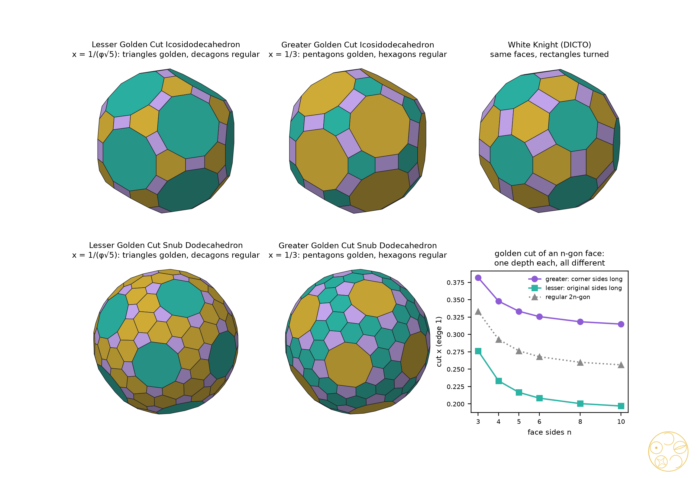
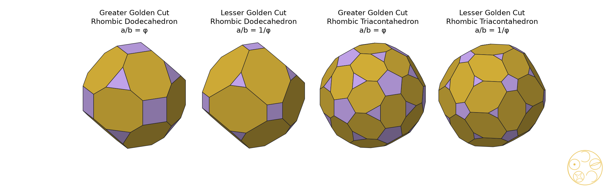
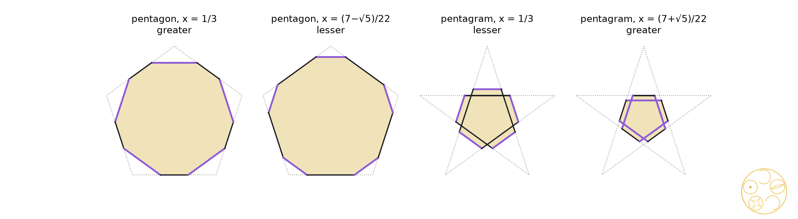

The golden tetrahedra are slices of the tesseract, the golden dodecahedra slices of the 120-cell; among the Archimedean, Catalan and Kepler–Poinsot solids, golden cuts are rare and are all found here
Slice a four-dimensional cube, the tesseract, straight across its longest diagonal and every slice is a tetrahedron with its corners cut off. At two golden heights the cuts are exactly the golden cuts of #88, one either side of the classical truncated tetrahedron at half height. The golden dodecahedra appear the same way in the 120-cell, so four of the five golden pairs of the regular solids are slices of regular four-dimensional solids. Beyond the regular solids golden cuts are rare: a solid with two kinds of face never has one; two solids come close, with every face golden or regular; two rhombic solids have their own golden pair; and the four star polyhedra of Kepler and Poinsot have two each.
A golden cut of a Platonic solid [1] cuts every corner equally so that each original face becomes a truncated polygon whose two side lengths are in the golden ratio φ. #88 proved that each Platonic solid has exactly two, ten solids in all, the DICTO-Kepler golden truncations: at the octahedron they are DICTO's Icosaxes and Unborn Axes, which fill space together and which, with White Knight, were the DICTO-GTT-Solids; and the icosahedral and octahedral pairs are sections of the 120-cell and the 24-cell at 1/φ² and 1/φ of the way from the centre to a cell, either side of the Archimedean section at 1/2.
DICTO proposed taking the golden cuts beyond Plato, and chose this research: which other solids have golden cuts, and are the remaining golden pairs also sections of the regular four-dimensional solids? The four-dimensional answer is the strongest result and comes first (Section 3): the golden tetrahedra are sections of the tesseract and of the 120-cell, and the golden dodecahedra are sections of the 120-cell. The answer for the other families (Sections 4–6) is a set of rules that leave very few golden cuts: none on an Archimedean solid, two near misses (every face golden or regular), two rhombic Catalan solids, and the four Kepler–Poinsot star polyhedra. Section 7 records the golden members of classical space fillings.
Names. The names are DICTO's, with Greater for the deeper cut as in #88. The four golden rhombic cuts join the DICTO-Kepler golden truncations as the Greater and Lesser Golden Cut Rhombic Dodecahedra and Rhombic Triacontahedra. The six golden-or-regular cuts form a new family, the DICTO Golden-Regular Cuts: the Greater and Lesser Golden Cut Icosidodecahedra, and the Greater and Lesser Golden Cut Snub Dodecahedra in left and right hands. DICTO added the Lesser Golden Cut Icosidodecahedron and the Lesser Golden Cut Snub Dodecahedron to the DICTO-GTT-Solids, which are now Icosaxes, Unborn Axes, White Knight and these two. The eight golden cuts of the Kepler–Poinsot star polyhedra are named, the Greater and Lesser Golden Cut Great Dodecahedron, Great Icosahedron, Small Stellated Dodecahedron and Great Stellated Dodecahedron, and belong to no family.
We keep #88's definitions [1]. A solid with unit edges, regular faces and all corners on one sphere of radius R is cut at x when every corner is cut off by the plane perpendicular to the line from the centre to that corner, at distance x along the edges. Since both ends of a unit edge lie on the sphere, every edge at a corner makes the same angle with the centre–corner line (its projection on that line is 1/(2R)), so one plane meets all of them at the same x. An n-gon face becomes a 2n-gon whose sides alternate between the corner sides cnx, with cn = 2 cos(π/n), and the original sides 1 − 2x. For n = 3 it is a truncated triangle. The face is golden when the longer side over the shorter is φ, which happens at exactly two cuts:
xG(n) = φ / (cn + 2φ) (corner sides long: greater), xL(n) = 1 / (φcn + 2) (original sides long: lesser).
For a Platonic solid every face has the same n, which is #88's Theorem 2; our scripts reproduce #88's ten cuts exactly and rebuild each, every face of ratio φ. The face is a regular 2n-gon at x = 1/(cn + 2). Since φ²cn > cn, xG(n) > xL(n): the greater cut is always the deeper one, and DICTO's names follow #88, Greater for the deeper cut and Lesser for the lighter.
Proof. (a) On the hyperplane, the four conditions xi ≤ 1 cut out a regular tetrahedron whose corners have three coordinates equal to 1 and the fourth equal to 2h − 3; its edges, such as (1, 1, 1, 2h − 3) to (1, 1, 2h − 3, 1), have length √2(4 − 2h). The section of the tesseract is this tetrahedron cut by the four conditions xi ≥ −1. Along an edge leaving the corner with x4 = 2h − 3 < −1, the coordinate x4 rises linearly from 2h − 3 to 1 and reaches −1 at the fraction (2 − 2h)/(4 − 2h) = (1 − h)/(2 − h) of the edge, the same on all three edges at that corner and the same at every corner. So the section is the tetrahedron cut at x = (1 − h)/(2 − h), and x < 1/2 for h > 0, so the cuts do not meet. Using 1 − 1/φ = 1/φ² and 2 − 1/φ² = φ: h = 1/φ² gives x = (1/φ)/φ = 1/φ², the greater golden cut of the triangle; h = 1/2 gives x = 1/3, the Archimedean cut; h = 1/φ gives x = (2 − φ)/(3 − φ) = 1/(φ + 2) = 1/(φ√5), the lesser golden cut. The three heights are exactly 1/φ², 1/2 and 1/φ of the gap between the corner layers h = 0 and h = 1. (b), (c) From the exact coordinates of the 120-cell in the atlas of #65 [4] (all arithmetic in Q(√5)), we computed each section's corners exactly: the 120-cell corners lying in the hyperplane and the points where its edges cross it. In atlas units the four heights are 37/32 + 17√5/32 and 39/32 + 17√5/32 (cell-first, between the layers 9/8 + √5/2 and 5/4 + 9√5/16) and 25/16 + 11√5/16 and 51/32 + 23√5/32 (corner-first, between the layers 25/16 + 11√5/16 and 13/8 + 3√5/4). For each section we found a one-to-one matching of its corners (12, 12, 60 and 60) with those of the cut Platonic solid that multiplies every squared distance by one and the same factor, checked exactly for all pairs (66 or 1,770 of them). A matching of two finite point sets that scales all distances by one factor is a similarity, so each section is the cut solid up to scale. The positions in the gap, (h − lower layer)/(upper layer − lower layer), simplify exactly to 1/φ² and 1/φ in (b) and to 1/2 in (c). The last sentence adds #88's Theorem 3 (octahedra in the 24-cell, icosahedra in the 120-cell). ∎

So the golden heights of #88 come back. Measured across one gap between layers of corners, the golden pair sits at 1/φ² and 1/φ, either side of the Archimedean section at 1/2, in the 120-cell (dodecahedra; the truncated dodecahedron halfway is slice 120 of the #65 atlas), the tesseract (tetrahedra) and the 24-cell (octahedra; there the gap runs from the centre to a cell). The icosahedra of #88 sit at 1/φ² and 1/φ of the whole distance from the centre of the 120-cell to a cell. The 120-cell's corner-first tetrahedra break the pattern: the greater one is a layer of corners and the lesser one sits halfway to the next layer.
Icosaxes, now exact. #88 found Icosaxes a second time, as the 120-cell's corner-first section at φ/2 of the way from the centre to the tip (atlas height 11/8 + 5√5/8), but compared it in floating point. We redid this check exactly. The hyperplane meets no edge of the 120-cell in its interior: the section is the layer of 24 corners at that height. Matching these 24 corners with Icosaxes (exact coordinates from DICTO Solids v7) multiplies all 276 squared distances by the same factor 3 − √5 exactly, and the same check against the octahedron cut at x = 1/φ², #88's golden cut that is Icosaxes, holds as well. So Icosaxes is exactly a layer of corners of the 120-cell.
Not found. We sliced the 5-, 8-, 16-, 24-, 600- and 120-cell at 2,400 heights in each of their corner-, edge-, face- and cell-first directions and compared every section, scale-free, with 77 solids: #88's ten, White Knight, the 62 one-kind cuts of Section 4 and the Greater and Lesser Golden Cut Rhombic Dodecahedra and Rhombic Triacontahedra of Section 5 (floating point; every match then proved exactly as above). The search found #88's sections again and the sections of the Main Theorem. The Greater and Lesser Golden Cut Cubes were not found in these directions; this is a search result, not a proof that they are not sections. None of the new solids of Sections 4 and 5 was found either. For the Greater and Lesser Golden Cut Snub Dodecahedra there is a reason within a wide class of directions: a section's symmetry contains the stabiliser of its direction in the symmetry group of the four-dimensional solid, and by Steinberg's theorem [9] that stabiliser is generated by the reflections it contains; if it contains the rotations of the snub dodecahedron it contains mirrors as well, so the section is not chiral.
Proof. Both xG and xL fall strictly as cn grows, and cn grows with n, so different n give different values within each list. xG(n) = xL(m) means cn = φ²cm ≥ φ² > 2 > cn, which is impossible. All 66 pairs were also checked exactly, and each of the 62 one-kind cuts of the 14 solids was built and checked to be a convex truncation with the expected faces. ∎
At xG(n) a face with m sides has ratio (corner side over original side) φcm/cn; at xL(n) it has cm/(φcn). It is 1, a regular 2m-gon, exactly when cn = φcm or cm = φcn.
Proof. We need cm = φcn for two face sizes of the solid. With n ≥ 4 this needs cm ≥ φ√2 > 2, impossible; with n = 3 it needs cos(π/m) = φ/2 = cos 36°, so m = 5. The solids with triangles and pentagons are the icosidodecahedron, the snub dodecahedron and the rhombicosidodecahedron, and the last fails on its squares (ratio √2 or 1/√2 at the two cuts). The regular-hexagon cut of a triangle, x = 1/3, is the greater golden cut of the pentagon, and the regular-decagon cut of a pentagon, x = 1/(φ + 2), is the lesser golden cut of the triangle. ∎ Exact check from coordinates in Q(√5): the Lesser Golden Cut Icosidodecahedron has 60 edges of length x and 120 of length φx, its 30 corner faces are golden rectangles, and its volume is 13/2 + 97√5/30; the Greater Golden Cut Icosidodecahedron has 120 edges of length 1/3 and 60 of length φ/3, and volume 395/54 + 17√5/6.
Two new DICTO-GTT-Solids. In both lesser cuts each triangle becomes a truncated triangle with original sides 1 − 2x and corner sides x, and at x = (5 − √5)/10 the ratio (1 − 2x)/x is exactly φ. This was checked exactly in Q(√5): the Lesser Golden Cut Icosidodecahedron has the two squared edge lengths 1/5 and (3 − √5)/10, in ratio exactly φ², and the triangles of the Lesser Golden Cut Snub Dodecahedron have ratio exactly (1 + √5)/2. That is the strict rule of the DICTO-GTT-Solids, single solids whose truncated triangles have ratio exactly φ [1], and DICTO added them to the DICTO-GTT-Solids, which are now Icosaxes, Unborn Axes, White Knight, the Lesser Golden Cut Icosidodecahedron and the Lesser Golden Cut Snub Dodecahedron (in both hands). The greater cuts have regular hexagons in place of truncated triangles, and the golden rhombic cuts of Section 5 have golden octagons, so they do not join.
| n | xG(n), corner sides long | xL(n), original sides long | solids with n-gons |
|---|---|---|---|
| 3 | (3 − √5)/2 = 1/φ² ≈ 0.381966 | (5 − √5)/10 = 1/(φ√5) ≈ 0.276393 | tT, CO, tC, RCO, sC, ID, tD, RID, sD, ESG |
| 4 | (√10 + 2√5 − 3√2 − 2)/4 ≈ 0.347943 | (√10 + 3√2 − 2√5 − 2)/4 ≈ 0.233196 | CO, tO, RCO, tCO, sC, RID, tID, ESG |
| 5 | 1/3 | (7 − √5)/22 ≈ 0.216542 | ID, tI, RID, sD |
| 6 | (2 + √15 + 6√5 − 7√3)/22 ≈ 0.325683 | (2 + √15 + 7√3 − 6√5)/22 ≈ 0.208224 | tT, tO, tCO, tI, tID |
| 8 | φ/(√(2 + √2) + 2φ) ≈ 0.318271 | 1/(φ√(2 + √2) + 2) ≈ 0.200411 | tC, tCO |
| 10 | φ/(√(φ√5) + 2φ) ≈ 0.314904 | 1/(φ√(φ√5) + 2) ≈ 0.196940 | tD, tID |
Table 1. The golden depth of each kind of face (edge 1). No Archimedean solid has a cut making all faces golden; its one-kind golden cuts are the rows of its face sizes. tT truncated tetrahedron, CO cuboctahedron, tC truncated cube, tO truncated octahedron, RCO rhombicuboctahedron, tCO truncated cuboctahedron, sC snub cube, ID icosidodecahedron, tD truncated dodecahedron, tI truncated icosahedron, RID rhombicosidodecahedron, tID truncated icosidodecahedron, sD snub dodecahedron, ESG elongated square gyrobicupola.

Not White Knight. The Lesser Golden Cut Icosidodecahedron has White Knight's face pattern exactly: 12 regular decagons, 20 truncated triangles of ratio φ and 30 golden rectangles. It is not White Knight. In White Knight the long sides of each truncated triangle meet the rectangles and the short sides meet the decagons (120 short and 60 long edges); in the Lesser Golden Cut Icosidodecahedron it is the other way round (60 short, 120 long). White Knight is a 120-cell section [4]; the Lesser Golden Cut Icosidodecahedron was not found among the sections (Section 3).
Zefiro. Zefiro [5] cut the icosidodecahedron with a rhombic triacontahedron and marked the stage where the pentagons become regular decagons, d = (4τ + 3)/10, and the stage where the triangles become regular hexagons, d = (τ + 4)/6 (τ = φ). Since the plane distance is d/R = 1 − x/(2φ²) here, these are exactly the Lesser and Greater Golden Cut Icosidodecahedra of Theorem 2 (0.947214 and 0.936339). The two solids are Zefiro's; we did not find their golden faces stated there. They keep DICTO's names, found independently, with Zefiro credited; the golden reading and the rule of Theorem 2 are new within our checks.
The corners of a Catalan solid fall into two or three orbits under its symmetries, and its faces are not regular. The edges at one corner are alike, so a plane perpendicular to the centre–corner line cuts them all at the same distance yo, which may differ between orbits o. We call a face golden when it becomes a 2n-gon whose corner sides all have one length a and whose original sides all have one length b, with a/b = φ (greater) or 1/φ (lesser). The conditions are linear in the yo, a and b.
Proof. On a rhombus face the corner sides are 2ysharp sin(α/2) and 2yblunt cos(α/2), and each original side is 1 − ysharp − yblunt. Setting both corner sides equal to a gives b = 1 − aK, a one-parameter family of alternating cuts, and the two golden conditions a = φb and b = φa give the stated values. For the other eleven Catalan solids, whose faces have two or three edge lengths (triangles, kites, pentagons), the alternating conditions fix a and b. Solved exactly over the field of the solid (sympy, from exact coordinates in Q(√2) or Q(√5)), they have one solution with b < 0, so the cuts would overlap, for the triakis tetrahedron, triakis octahedron, tetrakis hexahedron, deltoidal icositetrahedron, triakis icosahedron, pentakis dodecahedron and deltoidal hexecontahedron, and no solution for the disdyakis dodecahedron and disdyakis triacontahedron. For the pentagonal icositetrahedron and the pentagonal hexecontahedron the same equations were solved in floating point, with b clearly negative. Both golden cuts of each rhombic solid were checked exactly, corner by corner. ∎
Greater is deeper. A cut with one depth per orbit of corners has two depths here, ysharp and yblunt, so “deeper” needs a measure. We compare the depth at each kind of corner: both depths are proportional to a, and a is larger in the greater cut, so the greater cut is deeper at both kinds of corner (Table 2: 0.413 > 0.280 and 0.292 > 0.198 for the rhombic dodecahedron; 0.441 > 0.301 and 0.273 > 0.186 for the rhombic triacontahedron). It also removes more volume (it leaves 2.94509 against 3.03758, and 11.9873 against 12.2076). The measures agree, so Greater, for the deeper cut as in #88, is unambiguous.
| solid | Greater Golden Cut (a = φb) | Lesser Golden Cut (a = b/φ) | faces after the cut |
|---|---|---|---|
| rhombic dodecahedron (cos α = 1/3) | a = 0.477001, b = 0.294803; y = 0.413095, 0.292102; volume 2.94509 | a = 0.322952, b = 0.522548; y = 0.279685, 0.197767; volume 3.03758 | 12 octagons, 6 squares, 8 triangles |
| rhombic triacontahedron (tan(α/2) = 1/φ) | a = 0.463634, b = 0.286541; y = 0.440942, 0.272517; volume 11.9873 | b = 2/(2 + √(2 + φ)) = 0.512543, a = 0.316769; y = 0.301265, 0.186192; volume 12.2076 | 30 octagons, 12 pentagons, 20 triangles |
Table 2. The Greater and Lesser Golden Cut Rhombic Dodecahedra and Rhombic Triacontahedra, members of the DICTO-Kepler golden truncations (edge 1; y = ysharp, yblunt). Every corner face is regular with side a. The cuts with one cut depth at every corner, or with every plane at one distance from the centre, are special cases of the alternating family; neither golden cut is one of them, so under those stricter definitions no Catalan solid has a golden cut.

The four Kepler–Poinsot polyhedra are star polyhedra, not solids: their faces pass through each other and they do not bound a single region. They do have regular faces {p}, equal edges and all corners on one sphere [3], so the definitions of Section 2 apply unchanged with c = 2cos(π/p); for the pentagram, p = 5/2 and c = 2cos 72° = 1/φ.
Proof. The formulas of Section 2 with c5 = φ, c3 = 1 and c5/2 = 1/φ; for the pentagram, xG = φ/(1/φ + 2φ) = (7 + √5)/22 and xL = 1/(1 + 2) = 1/3. ∎
DICTO named the eight: the Greater and Lesser Golden Cut Great Dodecahedron, Great Icosahedron, Small Stellated Dodecahedron and Great Stellated Dodecahedron. In each pair the greater cut is the deeper one, with the larger x along every edge (1/3 > 0.2165, 0.3820 > 0.2764, and 0.4198 > 1/3 for both stellated dodecahedra). As star polyhedra they belong to no family.
The pentagram's two cuts are the conjugates of the pentagon's: replacing √5 by −√5 turns the pentagon's lesser cut (7 − √5)/22 into the pentagram's greater cut (7 + √5)/22 and leaves 1/3 in place, the greater cut of the pentagon and the lesser cut of the pentagram. The deeper pentagram cut, (7 + √5)/22 ≈ 0.4198 of the edge from each tip, goes beyond the pentagram's crossing points (at 1/φ² ≈ 0.3820); the lighter one stops short of them. The eight named cuts are star polyhedra too, like the uniform truncated great dodecahedron and truncated great icosahedron; as sections of convex four-dimensional solids are convex, none of them can be a section.

A light, constructive check of positive cases only. Cut every cell of a face-to-face filling the same way, the same distance along every edge at each kind of corner. The caps cut from the cells around a corner of the filling then close up into one hole, and cut cells and holes together fill space. We checked each hole by volume (number of cells at the corner × cap volume = volume of the hole):
All four start from fillings in Andreini's list [7], and the cut cells with their holes are the golden members of these truncation patterns; we claim no new filling. No new pair fills space on its own the way Icosaxes and Unborn Axes do [6].
Known. Truncation at any depth is classical. The series of sections of the regular four-dimensional solids are Alicia Boole Stott's [2], who drew them for all six; Coxeter [3] sets out the regular polytopes, their sections and the Kepler–Poinsot polyhedra. The 120-cell's exact atlas of sections is #65's [4]. The Greater and Lesser Golden Cut Icosidodecahedra of Theorem 2 are Zefiro's regular-decagon and regular-hexagon stages [5]; Zefiro [10] also cut the cubic Archimedean solids by the rhombic dodecahedron, cube and octahedron, looking for regular faces, without golden ratios. The golden truncated octahedra are Koca et al.'s non-regular truncated octahedra at τ and 1/τ [8], as #88 noted. The fillings of Section 7 go back to Andreini [7].
New within these checks. The tesseract sections of the Main Theorem and the 120-cell sections of the golden dodecahedra and tetrahedra, so that four of the five golden pairs are sections; the exact proof that Icosaxes is a layer of corners of the 120-cell; the rule of Theorem 1 (golden cuts need one face size); the golden-or-regular rule of Theorem 2, the DICTO Golden-Regular Cuts, with the golden reading of Zefiro's two stages and the Greater and Lesser Golden Cut Snub Dodecahedra; the two new DICTO-GTT-Solids; the Catalan result of Theorem 3 with the Greater and Lesser Golden Cut Rhombic Dodecahedra and Rhombic Triacontahedra, new DICTO-Kepler golden truncations; the golden cuts of the Kepler–Poinsot star polyhedra and their conjugate pairing; and the face swap that tells the Lesser Golden Cut Icosidodecahedron from White Knight. Where an earlier source describes one of these solids, it stays in DICTO's family, found independently, with the source credited.
Sources checked (3 November 2026). Reference library on dicto-big-brother (cited/ manifest and papers/ listing; searches: truncation, Archimedean, Catalan, semi-uniform, Kepler–Poinsot, golden; hits: Koca et al. 2015, Andreini 1905, Boole Stott 1900, Koca group papers on H3 and H4 orbits). Web: golden-ratio truncation of Archimedean solids; truncated icosidodecahedron with golden rectangles; truncated rhombic dodecahedron and triacontahedron; Zefiro's two 2011 papers (text read; not all figures); Koca's quaternionic H3 orbit papers; Conway–Hart truncation (free depth, no golden criterion found). Not found: golden-ratio truncation of Archimedean, Catalan or Kepler–Poinsot solids as such. Coxeter [3] is cited for its well-known contents; it was not re-read for this paper.
The golden heights 1/φ² and 1/φ of #88 return in the tesseract, where the golden tetrahedra sit either side of the Archimedean section at half height, and in the 120-cell, where the golden dodecahedra sit at the same fractions of a gap between layers of corners. With #88, four of the five Platonic golden pairs are sections of regular four-dimensional solids; the golden cubes remain to be found or ruled out. Beyond Plato, golden cuts need faces of one size: the Archimedean solids have none, the icosidodecahedron and snub dodecahedron come closest with every face golden or regular, the DICTO Golden-Regular Cuts, whose two lesser members DICTO added to the DICTO-GTT-Solids; among the Catalan solids only the two rhombic solids have a golden pair, new DICTO-Kepler golden truncations, and each Kepler–Poinsot star polyhedron has one too.
Data and code. studies/2026-11-03-golden-cuts-beyond-plato: gcb.py and gcb_exact.py (solids, cuts, exact duals); s1_platonic_archimedean.py (#88 reproduced, Theorems 1 and 2; 235 checks); s2_catalan.py and s2b_rhombic_exact.py (Theorem 3; 51 and 12 checks); s3_kepler_poinsot.py (Proposition 4; 24 checks); s4_sections4d.py (the search of Section 3, floating point); s5_exact4d.py (Main Theorem, sections located and compared exactly; 7 checks); s7_icosaxes_exact.py (Icosaxes in the 120-cell, exact; 10 checks); s8_sections_bijection.py (Main Theorem (b), (c): exact matchings of corners; 4 checks); s6_spacefill.py (Section 7; 10 checks); figs.py and fig5_tesseract.py (figures). All checks pass. The 120-cell is the exact atlas of #65 [4]. Run on dicto-big-brother.
[1] DICTO, "Every Platonic Solid Has Exactly Two Golden Cuts: the DICTO-Kepler Golden Truncations and the DICTO-GTT-Solids", paper #88, DICTO DOI: 10.5281/zenodo.23896439 (2026).
[2] A. Boole Stott, "On certain series of sections of the regular four-dimensional hypersolids", Verhandelingen der Koninklijke Akademie van Wetenschappen te Amsterdam, Eerste Sectie, 7, no. 3 (1900).
[3] H. S. M. Coxeter, Regular Polytopes, 3rd ed., Dover, New York (1973).
[4] DICTO, "The Red Queen 120-cell: Aristotle's five pyramids as the cores of the regular four-dimensional solids", paper #65, DICTO DOI: 10.5281/zenodo.23716140 (2026).
[5] L. Zefiro, "Vertex- and edge-truncation of the Platonic and Archimedean solids leading to vertex-transitive polyhedra", Visual Mathematics 13(2) (2011), https://www.mi.sanu.ac.rs/vismath/zefirosept2011/_truncation_Archimedean_polyhedra.htm.
[6] DICTO, "The Golden Split: Icosahedra, Unborns and AXE Become Two Convex Space-Fillers", paper #48, DICTO DOI: 10.5281/zenodo.23596362 (2026).
[7] A. Andreini, "Sulle reti di poliedri regolari e semiregolari e sulle corrispondenti reti correlative", Memorie della Società Italiana delle Scienze, Serie 3, 14 (1905).
[8] N. O. Koca, M. Koca, A. Al-Mukhaini, A. Al-Qanobi, "Quaternionic representations of the pyritohedral group, related polyhedra and lattices", arXiv:1506.04600 (2015); published as "Symmetry of the pyritohedron and lattices", SQU Journal for Science 21(2) (2016) 139–149.
[9] R. Steinberg, "Differential equations invariant under finite reflection groups", Transactions of the American Mathematical Society 112 (1964) 392–400.
[10] L. Zefiro, "Regular-shaped faces in solids with cubic symmetry derived from truncation processes by rhomb-dodecahedron or cube", Visual Mathematics (2011), https://www.mi.sanu.ac.rs/vismath/zefirooct2011/.